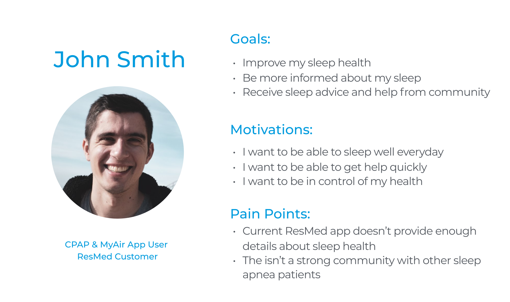
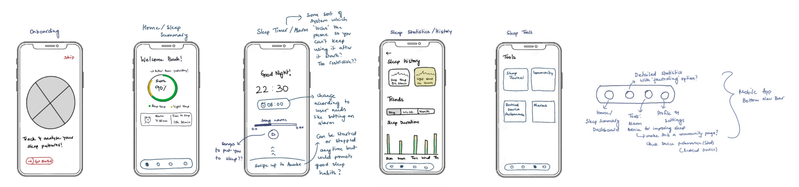
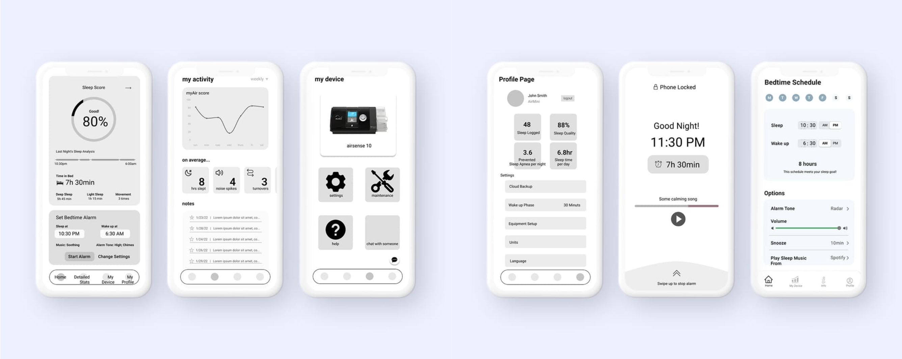
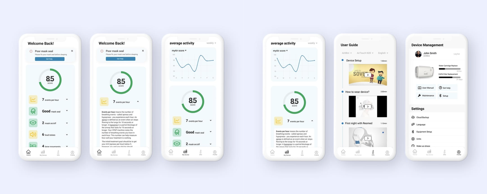
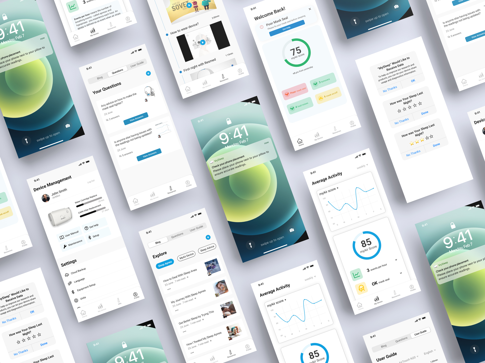

Research
Domain & Company Research
First, to do some initial research about ResMed, we created an informal but organized research report, capturing the collective knowledge we gathered about ResMed. This report included ResMed's history, branding, methods of operation and organization, attributes, and short-term and long-term goals. Regarding the market space, we researched domain history, key technological and cultural developments, both traditional and insurgent competitors, and constraints within the domain.
Stakeholders
After our initial research, we created a report covering internal and external stakeholders associated with ResMed and its domain. This included their goals, needs, preferences, key attributes, and, for the external stakeholders, jobs-to-be-done that they turn to ResMed to fulfill. Most of the internal stakeholder’s goals aligned as they were working together to make and improve ResMed products, as well as the business as a whole.
With the information gathered in this report, we then created a stakeholder map with value flows. When we were putting together the stakeholder map, we kept our stakeholder groupings but highlighted how they would interact with each other based on their goals. Highlighting helped us shape the interactions and the flow of the stakeholder map by displaying overlap between the different stakeholders.

Problem Space
With the information from our research, we decided to focus on improving the CPAP machine and app experience. ResMed's current app for connecting to their CPAP machine is the myAir app, which allows the users to see their myAir score (calculated by the mask and mask usage from the previous night).
To understand how users felt about the current app and identify any pain points, we looked at customer reviews of the myAir app. We found users complained that the current app was difficult to use and felt that it didn’t give them enough information about the factors for the myAir score and how to improve their sleeping experience. They also felt that customer service wasn’t always efficient and it was difficult to receive help quickly when needed.
Ideation
Target Customers
In order to get a grasp of the specific features we wanted to design and what exact pain points to address, we decided to create a customer persona and highlight their goals, their motivation for needing our solution, and their pain points with the current solution.

Prototyping
Initial Hand-Drawn Sketches
We began our prototyping for MySleep through a series of brainstorming sessions, where we came to the conclusion that we wanted to design an application that could bring curated sleeping experience. Our new design brings to our customer their detailed sleeping data and help them understand how to improve their sleep. Our initial sketches emcompassed three main pages - a page providing an easy-to-read summary, a statistics page, and a page with sleep tools.
Based on feedback from your classmates, we considered using sleep tools to connect our users to their physicians, so that patients can receive seamless help.

Low-Fidelity Digital Prototype
The next step of our prototyping was transferring our ideas onto a digital format on Figma. We specifically focused on microinteractions between the different pages and the user flow.
Critique from our classmates and professors for this iteration mentioned specifying how the user might use the data, focusing on how to help the user do the right thing to improve their sleep, and that some of the functions on the device page might be redundant. We also realized that most users prefer to use the alarm app already installed on their phone.

Mid-Fidelity Digital Prototype
Transitioning from low-fidelity to mid-fidelity, our team decided to implement several new features based on feedback to help our user to understand their sleep metrics. For the landing screen, we implemented a notification function to give a more condensed summary of the user's sleep and draw their attention to what they needed to fix. Under the logged data, the user can expand and see information on how to intepret and improve on their sleep. To further develop the idea of connecting our users to other people, we decided to change the set-up page to an informational page. Leveraging ResMed's comprehensive guidance videos, we designed a page that helping users get a headstart on using ResMed machine. On this page, users can filter by device, mask type, and language to get a curated sequence of guidance videos.
At the midpoint of designing for this prototype, we received feedback mentioning the repetitive functionalities of the bedtime schedule and alarm pages due to existing OS. We decided this was not within our focus for this problem scope and ultimately removed these pages. After completion of our mid-fidelity prototype, we received critique on how we planned to differentiate between home page and activity page.

High-Fidelity Digital Prototype
TIn the high-fidelity stage of prototyping, we narrowed in on the user experience that each aspect of our data collection provides. This meant allowing users to be able to fully understand the data the app was showing them by providing explanations and providing visible and immediate notifications to draw their attention to any possible issues. To further provide value to various stakeholders, we created a notification to prompt proper usage of the app from users. We also wanted to include a method for ResMed to collect personal user data, leading to the sleep rating. Finally, all the data collection lead to user safety considerations, so we decided to create an onboarding notification asking for permission to collect data to ensure user consent and comfort.
One piece of feedback we received discussed providing more value to multiple stakeholders. To address this, in our final prototype we expanded our resources page to be more comprehensive, providing multiple sources of information. We also hoped this would target a pain point gained from initial research regarding sleep apnea patients lacking a sense of community and belonging.
